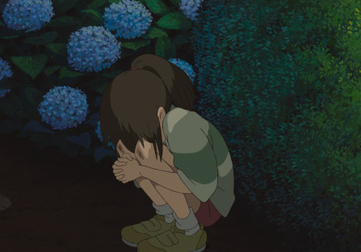
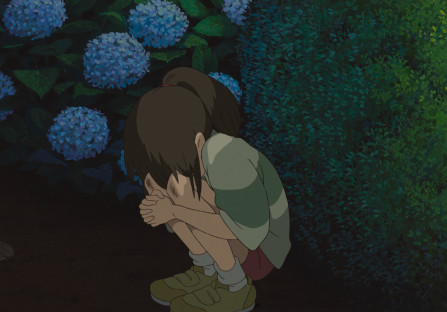

HANA
Flowers
Hanakotoba (花言葉) is the Japanese form of the language of flowers, meant to convey emotion and communicate directly to the recipient or viewer without needing the use of words. For examples, the lily has different meanings: the white lily represents purity and chastity; the red spider one lost memory and abandonment. The yellow chrysanthemum is the imperial symbol of Japan.
Text from en.wikipedia.org/wiki/Hanakotoba

Tsuchiya Koitsu, Kiku (Chrysanthemum), 1930
 Implicit reference
Implicit reference
 Explicit reference
Explicit reference
The meaning of flowers within the narrative depends on the interpretation the author wants to give. For this reason, there is not always an attached folkloric meaning, but they may be used as a background accessory to enrich a scene.


 
